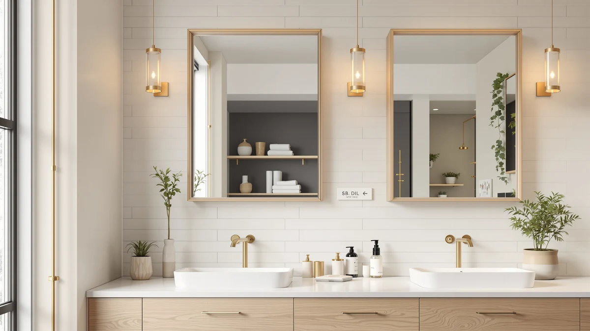

How to Install Bathroom Mirror with Storage: Complete Guide (2026)
Prices and picks verified as of September 2026. Independent, reader-supported reviews.


Things to Know Before You Buy
- Most bathroom mirror cabinets weigh between 15 and 35 pounds once loaded with toiletries, so anchoring into at least one stud matters more than the mounting hardware in the box.
- Recessed installs, which cut into the wall between studs, require checking for plumbing and electrical lines first. Surface-mount installs skip that risk entirely.
- A two-person job goes faster: one person holds the cabinet level while the other marks and drills.
- Budget an extra 30 minutes if you're removing an old glued-on mirror, since adhesive removal is usually the slowest part of the job.
Learning how to install bathroom mirror with storage takes an afternoon, a stud finder, and a level, not a contractor. Most surface-mount storage mirrors ship with a French cleat or a set of keyhole brackets, and the job comes down to finding solid backing, marking a level line, and driving the right anchors into drywall or tile. Skip the stud finder and you risk a cabinet held up by drywall paste alone, which fails within weeks of daily use.
This guide walks through five steps: picking a mounting method, prepping the wall, locating studs and setting the bracket, hanging the cabinet level, and organizing the storage once it's up. Along the way you'll see the tools and supplies that make the job go faster, plus the mistakes that turn a one-hour install into a Saturday spent patching drywall. If your old mirror is already glued to a tiled wall, plan extra time for careful removal so you don't crack the surrounding surface.
What You'll Need
- Supplies: wall anchors rated for the cabinet's loaded weight, silicone caulk, painter's tape, and a pencil for marking the wall
- Tools: a stud finder, a power drill with driver bits, a 4-foot level, a tape measure, and a screwdriver
Step 1: Choose Your Mounting Method and Mark the Wall
Before you touch a drill, decide whether the cabinet will mount on the surface of the wall or recess into it between studs. Surface-mount is the faster route for most bathrooms and the one this guide focuses on for how to install bathroom mirror with storage without opening up drywall. Recessed installs look sleeker but require cutting a stud-bay-sized hole and confirming there's no plumbing or wiring behind that section of wall.
Once you've picked a method, measure the vanity or counter below and mark a center line for the cabinet, typically 5 to 6 inches above the faucet or sink edge for comfortable use. Use painter's tape to outline the cabinet's footprint on the wall. That outline becomes your reference for every measurement in the steps that follow, so take your time getting it level and centered over the sink.
Step 2: Remove the Old Mirror and Prep the Surface
If a mirror or medicine cabinet already hangs in that spot, remove it before you start marking new holes. Glued mirrors need a putty knife and steady, even pressure to avoid cracking the tile behind them. Screwed-in cabinets usually lift straight off their mounting bracket once the screws are out. Set the old unit aside on a towel so you don't scratch the glass or the wall.
Patch any exposed screw holes with spackle and let it dry, then wipe the area with a damp cloth to remove dust and old adhesive residue. A clean, flat wall matters more than most people installing a bathroom mirror with storage expect, because small bumps behind the cabinet can throw off how flush it sits once mounted.
Step 3: Locate the Studs and Install the Mounting Bracket
Run a stud finder across the width of your taped outline and mark every stud edge you detect with a pencil. Most bathroom walls have studs spaced 16 inches apart, but older homes sometimes vary, so check twice before drilling. If a stud lands outside the cabinet's bracket holes, plan to use heavy-duty toggle anchors rated for at least the cabinet's full loaded weight instead of relying on drywall alone.
Hold the mounting bracket or French cleat against the wall at your marked height and check it with a level before drilling a single hole. Drill pilot holes into the studs where possible, drive in the screws, and give the bracket a firm tug to confirm it won't shift. This bracket carries the entire weight of the cabinet once it's loaded with toiletries, so a loose screw here is the most common point of failure in this kind of install.
Step 4: Hang the Cabinet and Check for Level
With a second person supporting the bottom edge, lift the cabinet and guide its rear bracket onto the wall-mounted cleat or hooks. Let it settle into place, then step back and check it with a level across the top and down both sides. A cabinet that reads level on top but tilts on the sides usually means one bracket screw sits proud of the wall, so recheck those before moving on.
Many storage mirrors include additional side screws or safety brackets that anchor the cabinet to the wall beyond the main mounting point. Install those now, following the screw length and spacing in the manufacturer's manual, since skipping this step is what lets a cabinet door pull the whole unit forward over time.
Step 5: Secure the Cabinet and Organize the Storage
Run a thin bead of silicone caulk along the top edge of the cabinet where it meets the wall, especially if it sits near a shower or tub, to keep moisture from seeping behind it. Open and close every door and drawer to confirm smooth movement, and adjust any hinge that binds or sits crooked.
Finish by loading the shelves with your heaviest items on the bottom and lighter ones up top, which keeps the cabinet's center of gravity low and reduces strain on the mounting bracket. This last step of any bathroom mirror with storage installation is where a few purpose-built organizers earn their keep, since loose bottles and tubes tend to slide and tip on a bare shelf.
Common Mistakes to Avoid
The most common mistake in a bathroom mirror with storage install is skipping the stud finder and trusting drywall anchors alone. Anchors rated for 25 pounds hold fine on day one, but the constant opening and closing of cabinet doors works them loose within a few months, and the whole unit ends up crooked or on the floor.
A close second is rushing the level check. It takes thirty extra seconds to set a level across the bracket before drilling, and skipping that step means discovering the cabinet sits a quarter inch off only after every screw is in and the caulk has cured. At that point, fixing it means patching new holes and starting over.
Some installers also ignore the door swing before committing to a mounting height. A cabinet hung too close to a light fixture or a shower curtain rod will hit that fixture every time someone opens the door, so check clearance in both directions, not just up and down, before drilling final holes.
Skipping the caulk bead along the top edge invites moisture behind the cabinet in a room that runs humid daily. Left unsealed, that gap lets water reach the drywall and the mounting screws. The moisture corrodes the hardware and softens the wall behind it faster than most people expect. A few minutes with a caulk gun after installation prevents a repair job down the road.
Our Top Picks
Once your cabinet is mounted, the right organizers keep it from turning into a jumble of loose bottles. These three accessories pair well with almost any bathroom mirror with storage setup, based on their price, capacity, and fit for typical shelf depths.

Editor’s Pick
Besti Rustic Vanity Organizer for
Its divided compartments keep small items upright on narrow cabinet shelves, and the rustic wood finish matches most vanity hardware without standing out.
$34.95
Check Price on Amazon
Best Value
Tbestmax 4 Pack Qtip Holder
Four small containers fit even the shallowest cabinet shelf, and the low price makes this an easy add-on once the mirror is already hung.
$13.99
Check Price on Amazon
Premium Choice
GeeBom Under Sink Organizer Pull
The pull-out design reaches items stored deep in a cabinet without removing everything stacked in front of them, which matters most in a compact bathroom.
$39.99
Check Price on AmazonDo I need to hit a stud to install a bathroom mirror with storage?
You do not need to hit a stud at every screw, but at least one mounting point should land on solid framing.
Can I install a bathroom mirror with storage over tile?
Yes, but drill slowly with a masonry or tile bit to start each hole, then switch to a wood bit once you reach the stud or backing behind it.
Frequently Asked Questions
Do I need to hit a stud to install a bathroom mirror with storage?
Can I install a bathroom mirror with storage over tile?
How high should a bathroom mirror with storage cabinet hang above the sink?
What size anchors work best for a bathroom mirror with storage?
Can one person install a bathroom mirror with storage alone?
Verdict
Installing a bathroom mirror with storage comes down to four things that matter more than the cabinet's finish or price: finding a stud, checking level before you drill, matching the anchors to the loaded weight, and sealing the top edge against a humid room. Follow the five steps above in order and the job takes under two hours from removing the old mirror to loading the first shelf.
Once the cabinet hangs securely, an organizer like the Besti Rustic Vanity Organizer earns back the effort by keeping small items from sliding around on cabinet shelves, especially in a household sharing one bathroom. Its compartments suit the narrow shelf depth typical of surface-mount cabinets, and the finish holds up next to most existing vanity hardware.
Whether you go with a budget pick like the Tbestmax organizer or a pull-out system for deeper storage, the install itself doesn't change. Get the bracket right, and everything else on the shelf is just organization.